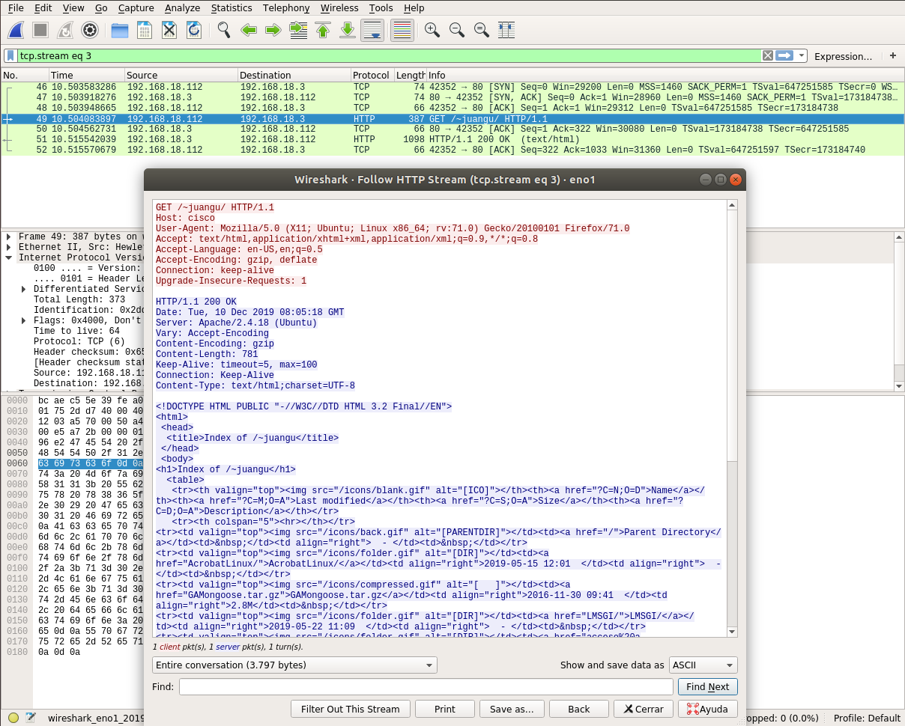
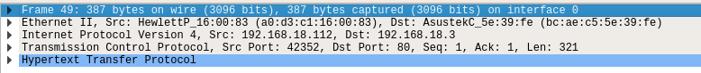
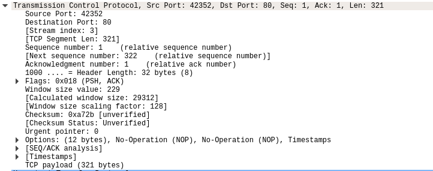
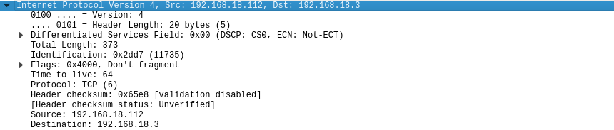
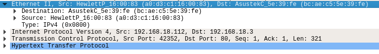
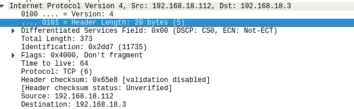
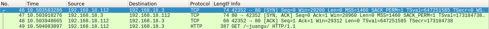

HTTP
Ejercicio 1
1.Lanza el sniffer wireshark y realiza una petición web

2.¿Qué protocolos de transporte, red y enlace utiliza HTTP?
Enlace: Ehernet II
Red : Ipv4
Transporte: TCP
Aplicación: HTTP

3.¿Qué puertos están implicados en la capa de transporte?¿Qué otros datos
puedes obtener de esta capa??
Puerto de destino: 80
Puerto de origen: 42352

4.¿Cuáles son las direcciones IP implicadas en dicha petición?¿A quién
corresponden? ¿Qué otros datos puedes obtener de esta capa?

¿Cuáles son las direcciones LAN implicadas en dicha petición? ¿A quién
corresponden? ¿Qué otros datos puedes obtener de esta capa? Calcula el tamaño
del payload de cada capa.

Total lenght – header lenght = payload
373-20=320

¿Qué protocolo se utiliza HTTP/1.0 o HTTP/1.1?
Filtrando TCP,busca el acuerdo en tres bandas entre cliente y servidor.
Interprétalo.
